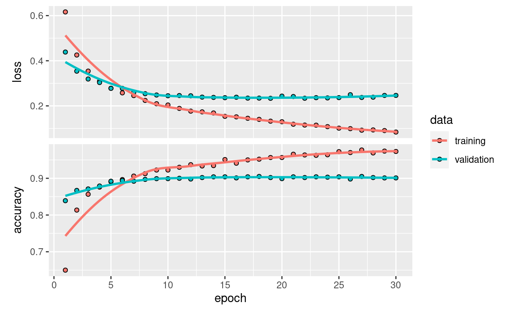

This notebook contains the code samples found in Chapter 5, Section 3 of Deep Learning with R. Note that the original text features far more content, in particular further explanations and figures: in this notebook, you will only find source code and related comments.
A common and highly effective approach to deep learning on small image datasets is to leverage a pre-trained network. A pre-trained network is simply a saved network previously trained on a large dataset, typically on a large-scale image classification task. If this original dataset is large enough and general enough, then the spatial feature hierarchy learned by the pre-trained network can effectively act as a generic model of our visual world, and hence its features can prove useful for many different computer vision problems, even though these new problems might involve completely different classes from those of the original task. For instance, one might train a network on ImageNet (where classes are mostly animals and everyday objects) and then re-purpose this trained network for something as remote as identifying furniture items in images. Such portability of learned features across different problems is a key advantage of deep learning compared to many older shallow learning approaches, and it makes deep learning very effective for small-data problems.
In our case, we will consider a large convnet trained on the ImageNet dataset (1.4 million labeled images and 1000 different classes). ImageNet contains many animal classes, including different species of cats and dogs, and we can thus expect to perform very well on our cat vs. dog classification problem.
We will use the VGG16 architecture, developed by Karen Simonyan and Andrew Zisserman in 2014, a simple and widely used convnet architecture for ImageNet. Although it is a bit of an older model, far from the current state of the art and somewhat heavier than many other recent models, we chose it because its architecture is similar to what you are already familiar with, and easy to understand without introducing any new concepts. This may be your first encounter with one of these cutesie model names – VGG, ResNet, Inception, Inception-ResNet, Xception… you will get used to them, as they will come up frequently if you keep doing deep learning for computer vision.
There are two ways to leverage a pre-trained network: feature extraction and fine-tuning. We will cover both of them. Let’s start with feature extraction.
0.1 Feature extraction
Feature extraction consists of using the representations learned by a previous network to extract interesting features from new samples. These features are then run through a new classifier, which is trained from scratch.
As we saw previously, convnets used for image classification comprise two parts: they start with a series of pooling and convolution layers, and they end with a densely-connected classifier. The first part is called the “convolutional base” of the model. In the case of convnets, “feature extraction” will simply consist of taking the convolutional base of a previously-trained network, running the new data through it, and training a new classifier on top of the output.

Why only reuse the convolutional base? Could we reuse the densely-connected classifier as well? In general, it should be avoided. The reason is simply that the representations learned by the convolutional base are likely to be more generic and therefore more reusable: the feature maps of a convnet are presence maps of generic concepts over a picture, which is likely to be useful regardless of the computer vision problem at hand. On the other end, the representations learned by the classifier will necessarily be very specific to the set of classes that the model was trained on – they will only contain information about the presence probability of this or that class in the entire picture. Additionally, representations found in densely-connected layers no longer contain any information about where objects are located in the input image: these layers get rid of the notion of space, whereas the object location is still described by convolutional feature maps. For problems where object location matters, densely-connected features would be largely useless.
Note that the level of generality (and therefore reusability) of the representations extracted by specific convolution layers depends on the depth of the layer in the model. Layers that come earlier in the model extract local, highly generic feature maps (such as visual edges, colors, and textures), while layers higher-up extract more abstract concepts (such as “cat ear” or “dog eye”). So if your new dataset differs a lot from the dataset that the original model was trained on, you may be better off using only the first few layers of the model to do feature extraction, rather than using the entire convolutional base.
In our case, since the ImageNet class set did contain multiple dog and cat classes, it is likely that it would be beneficial to reuse the information contained in the densely-connected layers of the original model. However, we will chose not to, in order to cover the more general case where the class set of the new problem does not overlap with the class set of the original model.
Let’s put this in practice by using the convolutional base of the VGG16 network, trained on ImageNet, to extract interesting features from our cat and dog images, and then training a cat vs. dog classifier on top of these features.
The VGG16 model, among others, comes prepackaged with Keras. Here’s the list of image-classification models (all pretrained on the ImageNet dataset) that are available as part of Keras:
- Xception
- InceptionV3
- ResNet50
- VGG16
- VGG19
- MobileNet
Let’s instantiate the VGG16 model:
library(keras)
conv_base <- application_vgg16(
weights = "imagenet",
include_top = FALSE,
input_shape = c(150, 150, 3))
We passed three arguments to the constructor:
weights, to specify which weight checkpoint to initialize the model frominclude_top, which refers to including or not the densely-connected classifier on top of the network. By default, this densely-connected classifier would correspond to the 1000 classes from ImageNet. Since we intend to use our own densely-connected classifier (with only two classes, cat and dog), we don’t need to include it.input_shape, the shape of the image tensors that we will feed to the network. This argument is purely optional: if we don’t pass it, then the network will be able to process inputs of any size.
Here’s the detail of the architecture of the VGG16 convolutional base: it’s very similar to the simple convnets that you are already familiar with.
summary(conv_base)
Model: "vgg16"
______________________________________________________________________
Layer (type) Output Shape Param #
======================================================================
input_1 (InputLayer) [(None, 150, 150, 3)] 0
block1_conv1 (Conv2D) (None, 150, 150, 64) 1792
block1_conv2 (Conv2D) (None, 150, 150, 64) 36928
block1_pool (MaxPooling2D) (None, 75, 75, 64) 0
block2_conv1 (Conv2D) (None, 75, 75, 128) 73856
block2_conv2 (Conv2D) (None, 75, 75, 128) 147584
block2_pool (MaxPooling2D) (None, 37, 37, 128) 0
block3_conv1 (Conv2D) (None, 37, 37, 256) 295168
block3_conv2 (Conv2D) (None, 37, 37, 256) 590080
block3_conv3 (Conv2D) (None, 37, 37, 256) 590080
block3_pool (MaxPooling2D) (None, 18, 18, 256) 0
block4_conv1 (Conv2D) (None, 18, 18, 512) 1180160
block4_conv2 (Conv2D) (None, 18, 18, 512) 2359808
block4_conv3 (Conv2D) (None, 18, 18, 512) 2359808
block4_pool (MaxPooling2D) (None, 9, 9, 512) 0
block5_conv1 (Conv2D) (None, 9, 9, 512) 2359808
block5_conv2 (Conv2D) (None, 9, 9, 512) 2359808
block5_conv3 (Conv2D) (None, 9, 9, 512) 2359808
block5_pool (MaxPooling2D) (None, 4, 4, 512) 0
======================================================================
Total params: 14,714,688
Trainable params: 14,714,688
Non-trainable params: 0
______________________________________________________________________The final feature map has shape (4, 4, 512). That’s the feature on top of which we will stick a densely-connected classifier.
At this point, there are two ways you could proceed:
- Running the convolutional base over your dataset, recording its output to an array on disk, and then using this data as input to a standalone, densely connected classifier similar to those you saw in part 1 of this book. This solution is fast and cheap to run, because it only requires running the convolutional base once for every input image, and the convolutional base is by far the most expensive part of the pipeline. But for the same reason, this technique won’t allow you to use data augmentation.
- Extending the model you have (
conv_base) by adding dense layers on top, and running the whole thing end to end on the input data. This willallow you to use data augmentation, because every input image goes through the convolutional base every time it’s seen by the model. But for the same reason, this technique is far more expensive than the first.
We’ll cover both techniques. Let’s walk through the code required to set up the first one: recording the output of conv_base on your data and using these outputs as inputs to a new model.
We’ll start by running instances of the previously introduced image_data_generator() to extract images as arrays as well as their labels. We will extract features from these images by calling the predict method on the model.
base_dir <- "/courses/EDS232/dogs-vs-cats/small"
train_dir <- file.path(base_dir, "train")
validation_dir <- file.path(base_dir, "validation")
test_dir <- file.path(base_dir, "test")
dir_models <- here::here("data/dl")
datagen <- image_data_generator(rescale = 1/255)
batch_size <- 20
extract_features <- function(directory, sample_count) {
features <- array(0, dim = c(sample_count, 4, 4, 512))
labels <- array(0, dim = c(sample_count))
generator <- flow_images_from_directory(
directory = directory,
generator = datagen,
target_size = c(150, 150),
batch_size = batch_size,
class_mode = "binary"
)
i <- 0
while(TRUE) {
batch <- generator_next(generator)
inputs_batch <- batch[[1]]
labels_batch <- batch[[2]]
features_batch <- conv_base %>% predict(inputs_batch)
index_range <- ((i * batch_size)+1):((i + 1) * batch_size)
features[index_range,,,] <- features_batch
labels[index_range] <- labels_batch
i <- i + 1
if (i * batch_size >= sample_count)
# Note that because generators yield data indefinitely in a loop,
# you must break after every image has been seen once.
break
}
list(
features = features,
labels = labels
)
}
train <- extract_features(train_dir, 2000)
validation <- extract_features(validation_dir, 1000)
test <- extract_features(test_dir, 1000)
The extracted features are currently of shape (samples, 4, 4, 512). We will feed them to a densely-connected classifier, so first we must flatten them to (samples, 8192):
reshape_features <- function(features) {
array_reshape(features, dim = c(nrow(features), 4 * 4 * 512))
}
train$features <- reshape_features(train$features)
validation$features <- reshape_features(validation$features)
test$features <- reshape_features(test$features)
At this point, we can define our densely-connected classifier (note the use of dropout for regularization), and train it on the data and labels that we just recorded:
model <- keras_model_sequential() %>%
layer_dense(units = 256, activation = "relu",
input_shape = 4 * 4 * 512) %>%
layer_dropout(rate = 0.5) %>%
layer_dense(units = 1, activation = "sigmoid")
model %>% compile(
optimizer = optimizer_rmsprop(learning_rate = 2e-5),
loss = "binary_crossentropy",
metrics = c("accuracy"))
history <- model %>% fit(
train$features, train$labels,
epochs = 30,
batch_size = 20,
validation_data = list(validation$features, validation$labels))
Training is very fast, since we only have to deal with two Dense layers – an epoch takes less than one second even on CPU.
Let’s take a look at the loss and accuracy curves during training:
plot(history)

We reach a validation accuracy of about 90%, much better than what we could achieve in the previous section with our small model trained from scratch. However, our plots also indicate that we are overfitting almost from the start – despite using dropout with a fairly large rate. This is because this technique does not leverage data augmentation, which is essential to preventing overfitting with small image datasets.
Now, let’s review the second technique we mentioned for doing feature extraction, which is much slower and more expensive, but which allows us to leverage data augmentation during training: extending the conv_base model and running it end-to-end on the inputs. Note that this technique is in fact so expensive that you should only attempt it if you have access to a GPU: it is absolutely intractable on CPU. If you cannot run your code on GPU, then the previous technique is the way to go.
Because models behave just like layers, you can add a model (like conv_base) to a sequential model just like you would add a layer. So, you can do the following:
model <- keras_model_sequential() %>%
conv_base %>%
layer_flatten() %>%
layer_dense(units = 256, activation = "relu") %>%
layer_dense(units = 1, activation = "sigmoid")
This is what our model looks like now:
summary(model)
Model: "sequential_1"
______________________________________________________________________
Layer (type) Output Shape Param #
======================================================================
vgg16 (Functional) (None, 4, 4, 512) 14714688
flatten (Flatten) (None, 8192) 0
dense_3 (Dense) (None, 256) 2097408
dense_2 (Dense) (None, 1) 257
======================================================================
Total params: 16,812,353
Trainable params: 16,812,353
Non-trainable params: 0
______________________________________________________________________As you can see, the convolutional base of VGG16 has 14,714,688 parameters, which is very large. The classifier we are adding on top has 2 million parameters.
Before you compile and train the model, it’s very important to freeze the convolutional base. Freezing a layer or set of layers means preventing their weights from being updated during training. If you don’t do this, then the representations that were previously learned by the convolutional base will be modified during training. Because the dense layers on top are randomly initialized, very large weight updates would be propagated through the network, effectively destroying the representations previously learned.
In Keras, you freeze a network using the freeze_weights() function:
cat("This is the number of trainable weights before freezing",
"the conv base:", length(model$trainable_weights), "\n")
This is the number of trainable weights before freezing the conv base: 30 freeze_weights(conv_base)
cat("This is the number of trainable weights after freezing",
"the conv base:", length(model$trainable_weights), "\n")
This is the number of trainable weights after freezing the conv base: 4 With this setup, only the weights from the two dense layers that you added will be trained. That’s a total of four weight tensors: two per layer (the main weight matrix and the bias vector). Note that in order for these changes to take effect, you must first compile the model. If you ever modify weight trainability after compilation, you should then recompile the model, or these changes will be ignored.
Now you can start training your model, with the same data-augmentation configuration that you used in the previous example.
train_datagen = image_data_generator(
rescale = 1/255,
rotation_range = 40,
width_shift_range = 0.2,
height_shift_range = 0.2,
shear_range = 0.2,
zoom_range = 0.2,
horizontal_flip = TRUE,
fill_mode = "nearest")
test_datagen <- image_data_generator(rescale = 1/255)
train_generator <- flow_images_from_directory(
train_dir,
train_datagen,
target_size = c(150, 150),
batch_size = 20,
class_mode = "binary")
validation_generator <- flow_images_from_directory(
validation_dir,
test_datagen,
target_size = c(150, 150),
batch_size = 20,
class_mode = "binary")
model %>% compile(
loss = "binary_crossentropy",
optimizer = optimizer_rmsprop(learning_rate = 2e-5),
metrics = c("accuracy"))
mdl3_h5 <- file.path(dir_models, "cats_and_dogs_small_3.h5")
mdl3_history_rds <- file.path(dir_models, "cats_and_dogs_small_3_history.rds")
# check if already fitted and saved model
if (!file.exists(mdl3_history_rds) | !file.exists(mdl3_h5)){
# track time to fit
t0 = Sys.time()
# fit model
history <- model %>% fit(
train_generator,
steps_per_epoch = 100,
epochs = 30,
validation_data = validation_generator,
validation_steps = 50)
# record time to fit
attr(history, "minutes") <- difftime(Sys.time(), t0, units="mins") %>% as.double() %>% round(2)
# save fitted model and fitting history
history %>% saveRDS(mdl3_history_rds)
model %>% save_model_hdf5(mdl3_h5)
} else{
# load previously fitted model
history <- readRDS(mdl3_history_rds)
model <- load_model_hdf5(mdl3_h5)
}
Let’s plot our results again:
plot(history)
As you can see, we reach a validation accuracy of about 90%. This is much better than our small convnet trained from scratch.
0.2 Fine-tuning
Another widely used technique for model reuse, complementary to feature extraction, is fine-tuning. Fine-tuning consists in unfreezing a few of the top layers of a frozen model base used for feature extraction, and jointly training both the newly added part of the model (in our case, the fully-connected classifier) and these top layers. This is called “fine-tuning” because it slightly adjusts the more abstract representations of the model being reused, in order to make them more relevant for the problem at hand.

We have stated before that it was necessary to freeze the convolution base of VGG16 in order to be able to train a randomly initialized classifier on top. For the same reason, it is only possible to fine-tune the top layers of the convolutional base once the classifier on top has already been trained. If the classified wasn’t already trained, then the error signal propagating through the network during training would be too large, and the representations previously learned by the layers being fine-tuned would be destroyed. Thus the steps for fine-tuning a network are as follow:
- Add your custom network on top of an already trained base network.
- Freeze the base network.
- Train the part you added.
- Unfreeze some layers in the base network.
- Jointly train both these layers and the part you added.
We have already completed the first 3 steps when doing feature extraction. Let’s proceed with the 4th step: we will unfreeze our conv_base, and then freeze individual layers inside of it.
As a reminder, this is what our convolutional base looks like:
summary(conv_base)
Model: "vgg16"
______________________________________________________________________
Layer (type) Output Shape Param #
======================================================================
input_1 (InputLayer) [(None, 150, 150, 3)] 0
block1_conv1 (Conv2D) (None, 150, 150, 64) 1792
block1_conv2 (Conv2D) (None, 150, 150, 64) 36928
block1_pool (MaxPooling2D) (None, 75, 75, 64) 0
block2_conv1 (Conv2D) (None, 75, 75, 128) 73856
block2_conv2 (Conv2D) (None, 75, 75, 128) 147584
block2_pool (MaxPooling2D) (None, 37, 37, 128) 0
block3_conv1 (Conv2D) (None, 37, 37, 256) 295168
block3_conv2 (Conv2D) (None, 37, 37, 256) 590080
block3_conv3 (Conv2D) (None, 37, 37, 256) 590080
block3_pool (MaxPooling2D) (None, 18, 18, 256) 0
block4_conv1 (Conv2D) (None, 18, 18, 512) 1180160
block4_conv2 (Conv2D) (None, 18, 18, 512) 2359808
block4_conv3 (Conv2D) (None, 18, 18, 512) 2359808
block4_pool (MaxPooling2D) (None, 9, 9, 512) 0
block5_conv1 (Conv2D) (None, 9, 9, 512) 2359808
block5_conv2 (Conv2D) (None, 9, 9, 512) 2359808
block5_conv3 (Conv2D) (None, 9, 9, 512) 2359808
block5_pool (MaxPooling2D) (None, 4, 4, 512) 0
======================================================================
Total params: 14,714,688
Trainable params: 0
Non-trainable params: 14,714,688
______________________________________________________________________We will fine-tune all of the layers from block3_conv1 and on. Why not fine-tune more layers? Why not fine-tune the entire convolutional base? We could. However, we need to consider that:
- Earlier layers in the convolutional base encode more generic, reusable features, while layers higher up encode more specialized features. It is more useful to fine-tune the more specialized features, as these are the ones that need to be repurposed on our new problem. There would be fast-decreasing returns in fine-tuning lower layers.
- The more parameters we are training, the more we are at risk of overfitting. The convolutional base has 15M parameters, so it would be risky to attempt to train it on our small dataset.
Thus, in our situation, it is a good strategy to only some of the layers in the convolutional base.
Let’s set this up, starting from where we left off in the previous example:
unfreeze_weights(conv_base, from = "block3_conv1")
Now we can start fine-tuning our network. We will do this with the RMSprop optimizer, using a very low learning rate. The reason for using a low learning rate is that we want to limit the magnitude of the modifications we make to the representations of the layers that we are fine-tuning. Updates that are too large may harm these representations.
Now let’s proceed with fine-tuning:
BELOW IS TOO SLOW ON CPU, so not evaluating code chunks (eval=F)…
model %>% compile(
loss = "binary_crossentropy",
optimizer = optimizer_rmsprop(learning_rate = 1e-5),
metrics = c("accuracy"))
mdl4_h5 <- file.path(dir_models, "cats_and_dogs_small_4.h5")
mdl4_history_rds <- file.path(dir_models, "cats_and_dogs_small_4_history.rds")
# check if already fitted and saved model
if (!file.exists(mdl4_history_rds) | !file.exists(mdl4_h5)){
# track time to fit
t0 = Sys.time()
# fit model
history <- model %>% fit(
train_generator,
steps_per_epoch = 100,
epochs = 100,
validation_data = validation_generator,
validation_steps = 50)
# record time to fit
attr(history, "minutes") <- difftime(Sys.time(), t0, units="mins") %>% as.double() %>% round(2)
# save fitted model and fitting history
history %>% saveRDS(mdl4_history_rds)
model %>% save_model_hdf5(mdl4_h5)
} else{
# load previously fitted model
history <- readRDS(mdl4_history_rds)
model <- load_model_hdf5(mdl4_h5)
}
Let’s plot our results using the same plotting code as before:
plot(history)
We are seeing a nice 6% absolute improvement in accuracy, from about 90% to above 96%.
Note that the loss curve doesn’t show any real improvement (in fact, it’s deteriorating). You may wonder, how could accuracy stay stable or improve if the loss isn’t decreasing? The answer is simple: what you display is an average of pointwise loss values; but what matters for accuracy is the distribution of the loss values, not their average, because accuracy is the result of a binary thresholding of the class probability predicted by the model. The model may still be improving even if this isn’t reflected in the average loss.
We can now finally evaluate this model on the test data:
test_generator <- flow_images_from_directory(
test_dir,
test_datagen,
target_size = c(150, 150),
batch_size = 20,
class_mode = "binary"
)
model %>% evaluate_generator(test_generator, steps = 50)
Here we get a test accuracy of 96.5%. In the original Kaggle competition around this dataset, this would have been one of the top results. However, using modern deep learning techniques, we managed to reach this result using only a very small fraction of the training data available (about 10%). There is a huge difference between being able to train on 20,000 samples compared to 2,000 samples!
0.3 Take-aways: using convnets with small datasets
Here’s what you should take away from the exercises of these past two sections:
- Convnets are the best type of machine learning models for computer vision tasks. It is possible to train one from scratch even on a very small dataset, with decent results.
- On a small dataset, overfitting will be the main issue. Data augmentation is a powerful way to fight overfitting when working with image data.
- It is easy to reuse an existing convnet on a new dataset, via feature extraction. This is a very valuable technique for working with small image datasets.
- As a complement to feature extraction, one may use fine-tuning, which adapts to a new problem some of the representations previously learned by an existing model. This pushes performance a bit further.
Now you have a solid set of tools for dealing with image classification problems, in particular with small datasets.